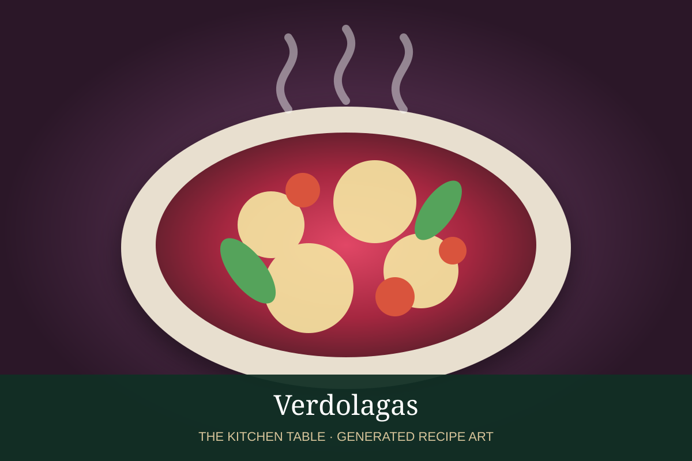

← Back to all recipes
GREENS · MEXICAN
Verdolagas
Purslane sautéed with tomato, onion, garlic, and chile for a tangy green side dish.
25 minServes 4

Photo: Secret Recipe Box
Ingredients
- 1 1/2 lb verdolagas, cleaned
- 1 tbsp oil
- 1/2 onion, diced
- 2 Roma tomatoes, diced
- 2 garlic cloves
- 1 serrano, minced
- Salt
Preparation
- Cook onion and serrano in oil until soft.
- Add garlic and tomato and cook until saucy.
- Add verdolagas and salt.
- Cover and cook until stems are tender.